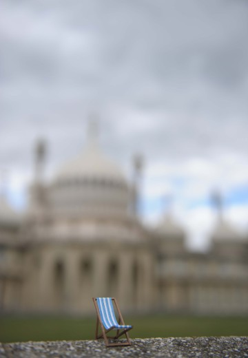

-

- 
Biographie
Basé à Brighton, Curious Space est un studio de scénographie qui développe des espaces uniques pour musées, galeries, espaces publics, scènes et performances.
Qu’il s’agisse de communiquer un message expographique ou une émotion sur scène, notre démarche s’attache toujours à imaginer une relation unique entre les spectateurs et l’espace que nous sculptons. Nous développons des scénographies immersives, qui éveillent l’esprit et provoquent des réactions émotionnelles fortes pour le public.
Anna et Patrick se sont rencontrés au Motley Theatre Design Course en 2003 et travaillent ensemble depuis ce jour. Au fil des années, ils ont développé un important réseau de collaborateurs créatifs et techniques.
Patrick Burnier
Design et direction artistiqueSuisse d’origine, Patrick est arrivé à Londres en 2003. Enfant, il rêvait d’être architecte ou pilote. Il a finalement commencé par étudier l’anthropologie et la géographie à l’Université, devenir un scénographe féru de parapente.
Il apprécie les défis créatifs et techniques et arrive toujours à tirer le meilleur de ses collaborations. Ses créations sont reconnues pour pousser les limites de l’ingénierie scénique, mais peuvent parfois être aussi simples qu’un cercle de craie. Il a été le lauréat du prestigieux Linbury Prize for Stage Design en 2005.

Anna Jones
Design et direction artistiquePassionnée d’arts de la scène, Anna a commencé par étudier le théâtre à l’Université de Hull. Durant ses études elle s’est prise d’une passion pour la scénographie qui ne l’a jamais quittée. Son approche esthétique pourrait être définie comme minimale et excentrique. L’expérience acquise en peinture de décors a déteint sur son travail de designer et lui confère un œil qui aime s’attacher aux détails et à la qualité de la finition.
Anna est également connue pour ses coupes de cheveux radicales en perpétuelle évolution ainsi que pour son sourire désarmant.
Raphaël von Allmen
Design et modélisation 3DAprès avoir obtenu son diplôme à l’ECAL, une des écoles incontournables sur la scène mondiale de l’art et du design, Raphaël est parti pour un tour du monde. Depuis son retour, il a développé sa pratique de conception de produit et collabore en parallèle avec Anna et Patrick en tant que scénographe. Depuis son studio en Suisse, il partage le bureau brightonien via skype et s’y déplace à chaque fois que ses talents de modélisateur fou sont physiquement requis in situ.
De nature curieuse, il adore les expérimentations en tous genres et ne s’arrête de travailler qu’une fois entièrement satisfait du résultat de ce qu’il entreprend.
L’équipe (Team)
Références
- V&A
- National Railway Museum
- Hermes International
- Rayban
- MEN Musée d’Ethnographie de Neuchâtel
- Science Museum London
- UEFA (with Metazona)
- Royal Opera House (Linbury Studio)
- Young Vic
- Royal Court
- Roundhouse (Circusfest)
- ZKM Karlsruhe
- NIFFF (Neuchâtel International Fantasy Film Festival)
- Musée de la Vie Wallone Liège
- The Royal Conservatoire of Scotland
- The Village Underground
- Sadler’s Wells
- Athénée théâtre Louis-Jouvet Paris
- Nouveau Parc animalier La Garenne